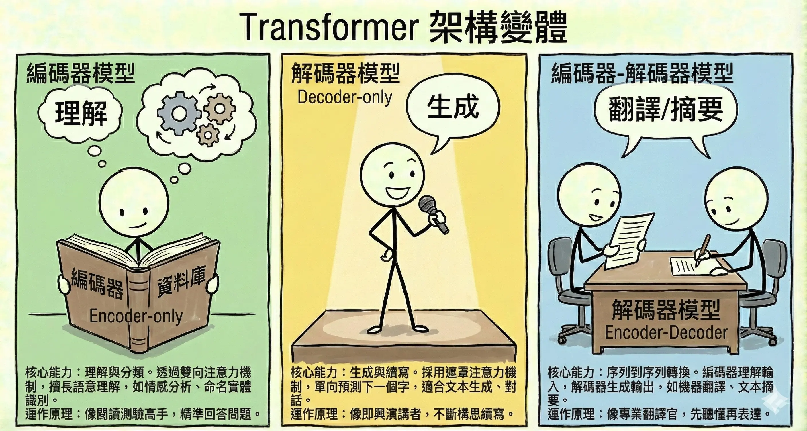
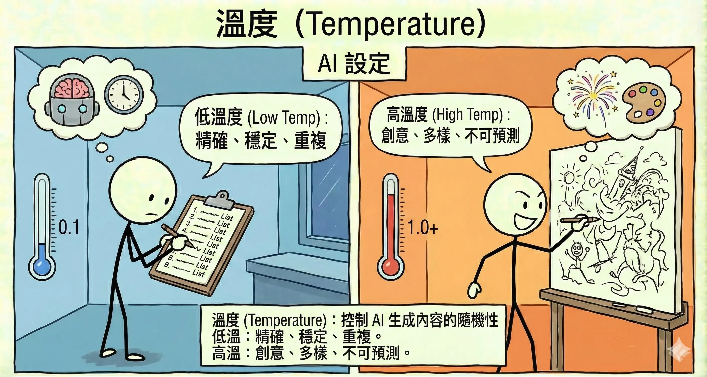
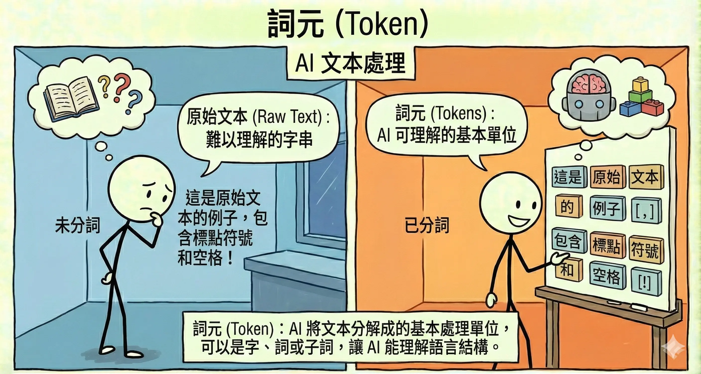
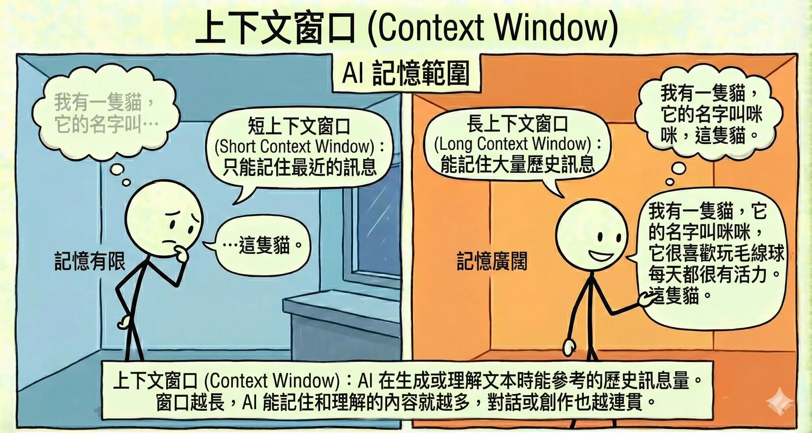

生成式 AI 模型架構與機制 (Generative Models & Mechanisms)
考點摘要：不同於基礎 AI 概論，本科聚焦於「生成」技術的特點、Transformer 變體應用以及推論參數的控制。
Transformer 核心機制
Transformer 的強大來自於其獨特的設計，摒棄了傳統 RNN 的循環處理方式，改用並行運算。
1. 自注意力機制 (Self-Attention)
這是 Transformer 的靈魂。它讓模型在處理一個字時，能同時「關注」句子中的其他字，從而理解上下文關係。
- 例子：「蘋果因為太貴了，所以我沒買它。」
- 當模型處理「它」這個字時，Self-Attention 機制會告訴模型，「它」指代的是前面的「蘋果」，而不是「我」。
- 優勢：解決了長距離依賴問題 (Long-term Dependency)，即使句子很長，開頭和結尾的關係也能被捕捉。
2. 位置編碼 (Positional Encoding)
由於 Transformer 是並行處理所有字（不像 RNN 一個字一個字讀），它本身不知道「順序」。
- 功能：給每個字加上一個「位置標籤」，讓模型知道哪個字在前面，哪個字在後面。
- 意義：確保「貓追狗」和「狗追貓」能被區分為不同的語意。
Transformer 架構變體
Transformer 模型自 2017 年問世以來，已成為自然語言處理 (NLP) 的基石。根據其架構的不同部分，主要可以分為三大類：

1. Encoder-only (編碼器模型)
這類模型只使用了 Transformer 的編碼器部分。它們透過雙向注意力機制 (Bidirectional Attention) 同時關注上下文，因此非常擅長理解語意。
- 代表模型：BERT (Bidirectional Encoder Representations from Transformers), RoBERTa。
- 核心能力：理解與分類。
- 情感分析 (Sentiment Analysis)：判斷這句話是正評還是負評。
- 命名實體識別 (NER)：找出句子中的人名、地名、機構名。
- 文本分類 (Text Classification)：將新聞歸類為體育、財經或政治。
- 運作原理：像是一個閱讀測驗的高手，讀完文章後能精準回答關於文章內容的問題，但不太會自己寫作文。
2. Decoder-only (解碼器模型)
這類模型只使用了 Transformer 的解碼器部分。它們採用遮罩注意力機制 (Masked Self-Attention)，只能看到前面的字，無法看到後面的字（單向），因此非常適合預測下一個字。
- 代表模型：GPT (Generative Pre-trained Transformer) 系列, LLaMA, Claude。
- 核心能力：生成與續寫。
- 文本生成 (Text Generation)：寫故事、寫信、寫程式碼。
- 對話系統 (Chatbot)：與使用者進行流暢的對話。
- 運作原理：像是一個即興演講者或小說家，根據已經講過的內容，不斷構思並說出下一個字，創造出流暢的篇章。
3. Encoder-Decoder (編碼器-解碼器模型)
這類模型完整保留了 Transformer 的架構。編碼器負責理解輸入，解碼器負責生成輸出。
- 代表模型：T5 (Text-to-Text Transfer Transformer), BART。
- 核心能力：序列到序列 (Seq2Seq) 的轉換。
- 機器翻譯 (Machine Translation)：將英文句子轉換為中文句子。
- 文本摘要 (Summarization)：將長篇文章轉換為短摘要。
- 運作原理：像是一個專業的翻譯官，先聽懂（Encode）整段話的意思，再用另一種語言或形式表達（Decode）出來。
| 架構類型 | 代表模型 | 核心機制 | 擅長任務 | 類比 |
|---|---|---|---|---|
| Encoder-only | BERT | 雙向注意力 | 理解、分類、標註 | 閱讀測驗高手 |
| Decoder-only | GPT | 單向 (遮罩) 注意力 | 生成、創作、續寫 | 小說家 |
| Encoder-Decoder | T5 | 完整 Transformer | 翻譯、摘要、轉換 | 翻譯官 |
LLM 訓練生命週期 (The Lifecycle of LLM Training)
一個成熟的生成式 AI 模型（如 ChatGPT）通常經歷三個階段的訓練：
1. 預訓練 (Pre-training)
- 目標：讓模型學會「說人話」並具備廣泛的世界知識。
- 資料：海量的網際網路文本 (Wikipedia, 書籍, 網頁)。
- 方法：自監督學習 (Self-Supervised Learning)。遮住下一個字，讓模型去猜。
- 產出：基底模型 (Base Model)。它懂很多知識，但不懂如何遵循指令（你問它問題，它可能會反問你）。
2. 監督式微調 (Supervised Fine-Tuning, SFT)
- 目標：教會模型「聽懂指令」並以對話方式回應。
- 資料：人類精心撰寫的「指令-回答」對 (Instruction-Response Pairs)。
- 產出：指令微調模型 (Instruction Tuned Model)。此時模型已經可以當 Chatbot 用了。
3. 人類回饋強化學習 (RLHF)
- 目標：讓模型的回答更符合人類的價值觀（有用、誠實、無害）。
- 方法：
- 讓模型生成多個回答。
- 人類標註員對回答進行排名 (Ranking)。
- 訓練一個獎勵模型 (Reward Model) 來模擬人類喜好。
- 用強化學習 (PPO) 優化模型。
- 產出：對齊模型 (Aligned Model)。這是我們最終使用的版本 (如 GPT-4)。
模型參數與控制
在使用生成式 AI (特別是 LLM) 進行推論 (Inference) 時，我們可以透過調整參數來控制輸出的風格與品質。
1. 溫度 (Temperature)
溫度參數控制了模型在選擇下一個 Token 時的隨機性 (Randomness)。

- 低溫 (0.1 - 0.3)：
- 效果：模型會傾向選擇機率最高的 Token。輸出非常穩定、確定性高，幾乎每次跑結果都一樣。
- 適用場景：事實問答、程式碼生成、數學解題、資料萃取。
- 例子：問「中華民國的首都是哪？」，我們希望它回答「台北」，而不是發揮創意說「可能是高雄」。
- 高溫 (0.7 - 1.0+)：
- 效果：模型有機會選擇機率較低（但仍合理）的 Token。輸出變化多端，充滿創造力，但有時會胡言亂語。
- 適用場景：創意寫作、腦力激盪、寫詩、聊天。
- 例子：請它「寫一首關於秋天的詩」，高溫可以讓用詞更豐富、意境更獨特。
2. Top-K Sampling
- 原理：限制模型只能從機率最高的 K 個 Token 中選擇 (例如 K=50)。
- 效果：強迫模型忽略那些機率極低的冷門字，避免生成離題或不通順的內容。
3. Top-P (Nucleus Sampling)
這是另一種控制隨機性的方法，通常與 Temperature 二擇一使用。
- 原理：模型只從累積機率達到 P (例如 0.9) 的前幾個候選 Token 中進行抽樣。
- 效果：截斷了機率極低的尾端選項（那些完全不通順的字），確保生成的內容在「有創意」的同時，依然保持「通順合理」。
4. Token (詞元) 與 Context (上下文)

- Token (詞元)：
- LLM 看不懂中文字或英文字母，它看的是 Token。
- 計算方式：
- 英文：通常 1 個單字約等於 1.3 個 Token (或是 1000 Tokens 約等於 750 單字)。
- 中文：通常 1 個中文字約等於 1.5 ~ 2 個 Token (取決於分詞器)。
- 考點：API 計費通常是以 Token 數計算，包含輸入 (Prompt) 和輸出 (Completion)。
- 注意：新型的「推論模型」(Reasoning Models, 如 OpenAI o1)，其內部的「思考過程」(Reasoning Tokens) 雖不可見，但通常會被計入輸出 Token (Output Tokens) 收費。

- Context Window (上下文窗口)：
- 定義：模型一次能「記住」的最大 Token 數量 (包含輸入 + 輸出)。
- 限制：
- 早期模型 (如 GPT-3) 只有 4k Tokens。
- 現代模型 (如 GPT-4, Claude 3) 可達 128k 甚至 1M Tokens。
- 影響：如果對話長度超過 Context Window，最早的訊息就會被「擠出」記憶，模型會忘記你一開始說過的話。
- 解決策略：使用 RAG (檢索增強生成) 或摘要技術來管理上下文。
5. 頻率懲罰 (Frequency Penalty) 與 存在懲罰 (Presence Penalty)
- Frequency Penalty：根據一個字已經出現的次數來懲罰它。出現越多次，懲罰越重。
- 用途：減少「跳針」、重複同一句話的情況。
- Presence Penalty：只要一個字出現過（不管幾次），就給予懲罰。
- 用途：鼓勵模型談論新的話題，增加多樣性。
6. 生成策略 (Generation Strategies)
除了上述參數，模型在生成時的搜尋策略也很重要：
- Greedy Search (貪婪搜尋)：
- 每次都只選機率最高的那個字。
- 優點：速度快、穩定。
- 缺點：容易陷入局部最佳解，生成的句子可能缺乏創意或重複。
- Beam Search (束搜尋)：
- 每次保留前 N 個 (Beam Width) 可能性最高的「路徑」，走到最後再選總分最高的。
- 優點：生成的句子通常比 Greedy Search 更通順、品質更好。
- 缺點：運算量大，速度較慢。
- 注意：在現代 LLM (如 GPT-4) 中，通常預設使用 Sampling (Temperature/Top-P) 而非 Beam Search，因為 Sampling 更能產生多樣化的內容。